Cadastrar Documento interno
Após preencher a aba Interessados e clicar no botão Próxima, o sistema apresenta a aba Referências:
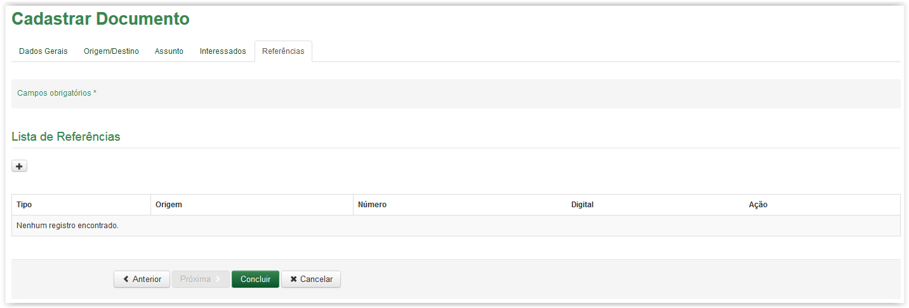
Cadastrar Documento - Aba Referências
Clique no ícone para Adicionar Referências:
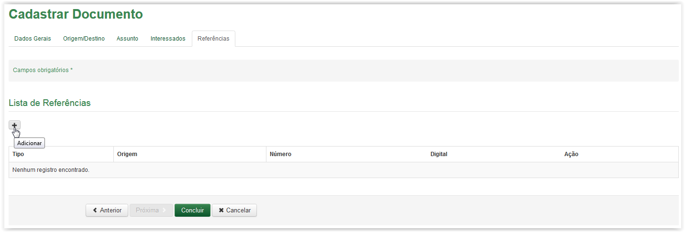
Clicando no ícone para adicionar uma referência
A tela Adicionar Referência será apresentada. Observe a obrigatoriedade do campo (Veja Nota 1):
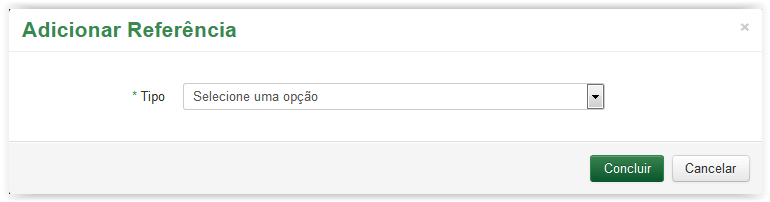
Adicionar Referência
Informações para cadastro de documento - Aba Referências:
Tipo: |
Tipo da Referência: Documento ou Processo. |
Tipo de Documento: |
Tipo de padrão de formatação do documento ao qual faz referência. Por exemplo: memorando, ofícios, cartas e etc. |
Digital: |
Digital do documento que faz referência. |
Número: |
Número do documento que faz referência. |
Origem: |
Origem do documento que faz referência. |
 Preenchendo a aba Referências do cadastro de documento!!
Preenchendo a aba Referências do cadastro de documento!!
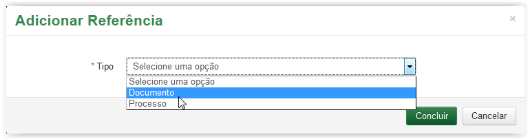
Selecionando a opção Documento campo Tipo
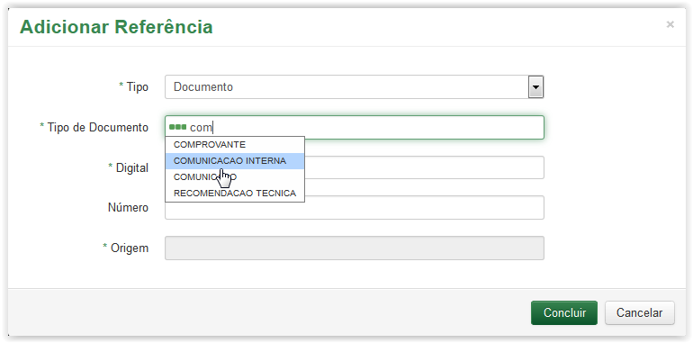
Selecionando um valor no campo Tipo de Documento
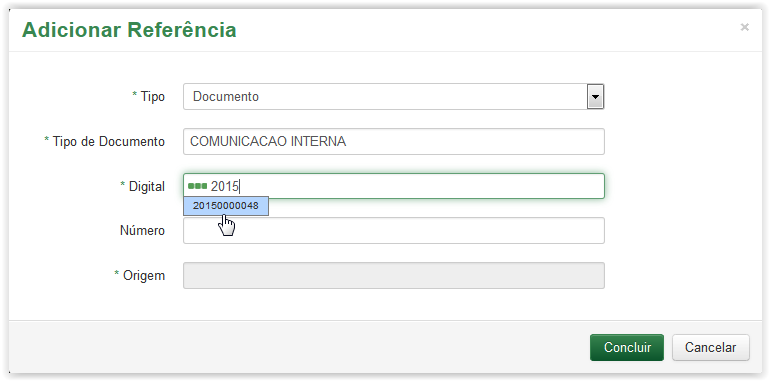
Selecionando um item na lista do campo Digital
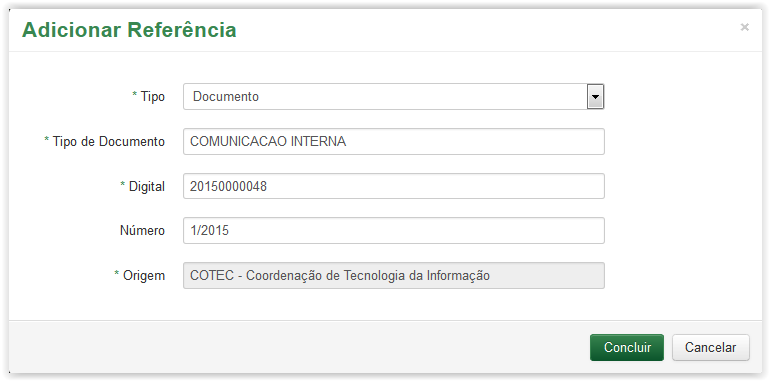
Preenchimento dos campos Número e Origem após a seleção da digital no campo Digital
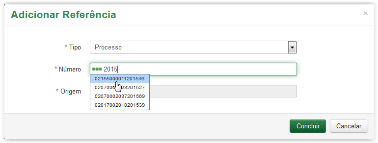
Selecionando um número no campo Número
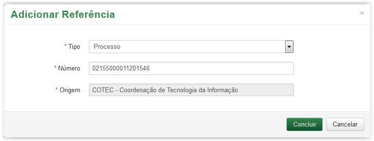
Preenchimento dos campos Origem após a seleção do número no campo Número
As referências cadastradas são apresentadas na Lista de Referências:
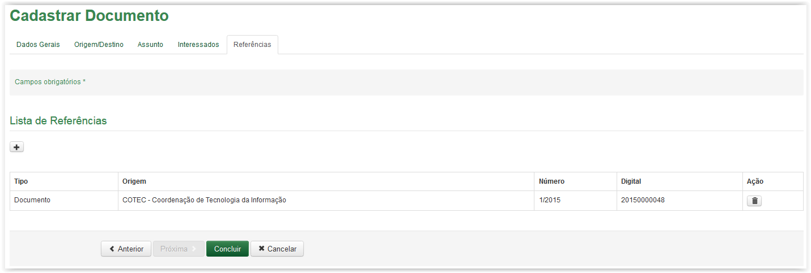
Cadastro de Documento - Aba Referências - Lista de Referencias
Se desejar excluir alguma referência, clique no ícone 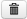:
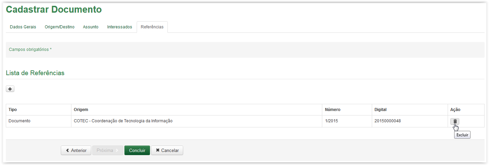
Clicando no ícone para excluir a referência
Uma mensagem de confirmação é apresentada:
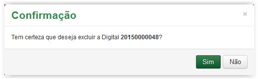
Mensagem de confirmação
Se não desejar excluir a referência, clique no botão  . Caso contrário, clique no botão
. Caso contrário, clique no botão  .
.
Ao confirmar a exclusão o sistema retira a referência da Lista de Referências.
IMPORTANTE!!
 Nota 1:
Nota 1:
Os campos obrigatórios são indicados pelo sinal de asterisco (*) na cor verde ao lado do nome. Quando algum ou nenhum campo obrigatório for preenchido, o sistema apresenta uma mensagem de erro: "Campos de preenchimento obrigatório não foram preenchidos.".
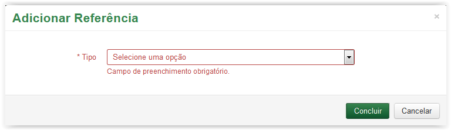
Comportamento da tela de Cadastro de Documento - Aba Referências, após clicar no botão Concluir sem preencher os campos obrigatórios.
Created with the Personal Edition of HelpNDoc: Free HTML Help documentation generator